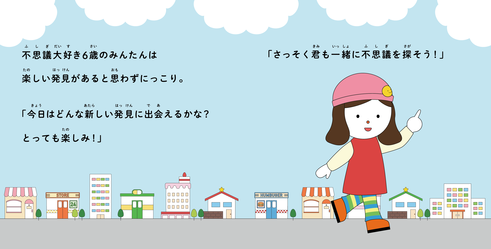
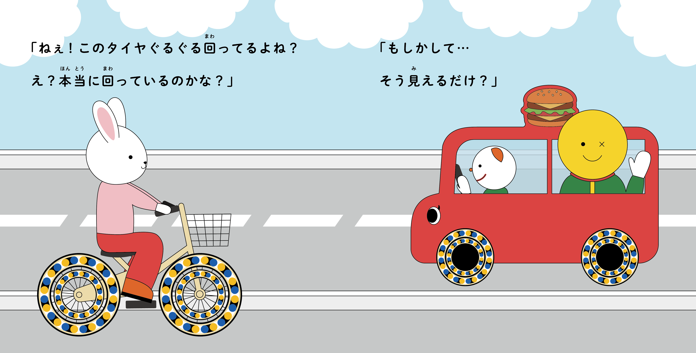
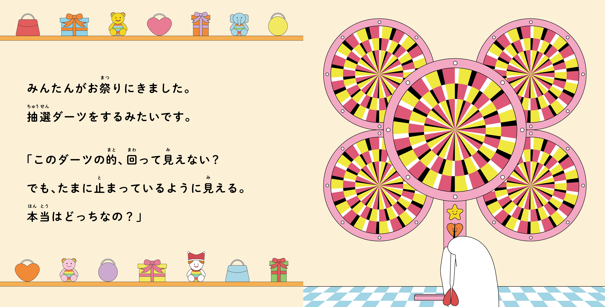
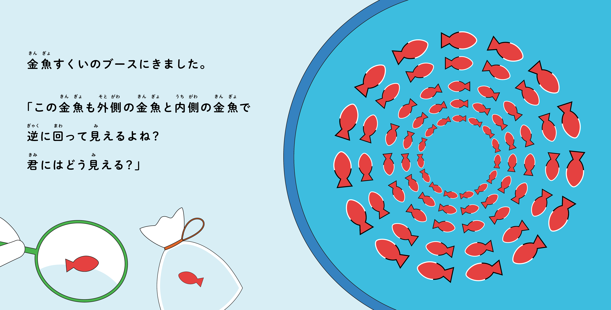
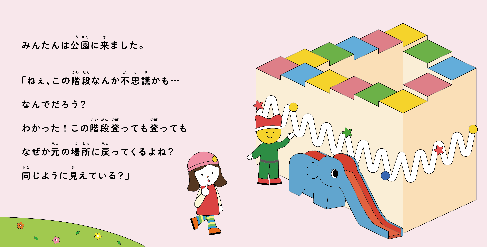
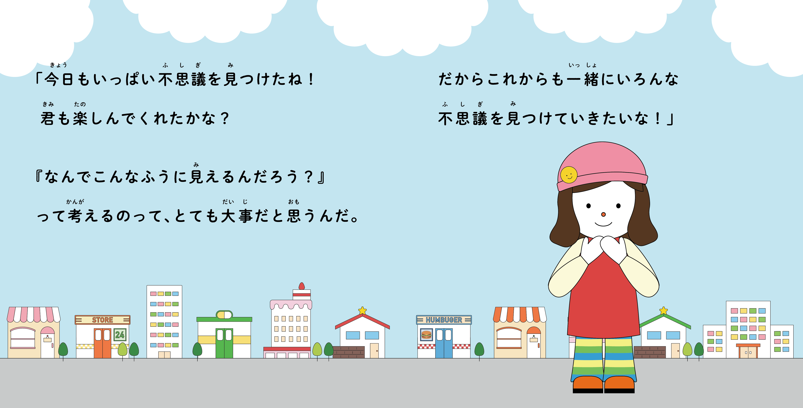

錯視絵本（卒業制作）











目的・課題
- 子どもの頃から錯視に興味を持っており、大学で心理学を通して改めて学んだ際にもその面白さを再認識したため、卒業制作のテーマに選んだ。
- 子どもの頃の自分も、大人になってからの自分も楽しめた体験から、「親子で一緒に楽しめること」をコンセプトにした。
制作期間
- 卒業年度の9月から月に一度登校し、テーマについて先生に相談したり全体発表を行ったりしながら、翌年3月の卒展に出展できるよう制作を進めた。
制作物について
- 表現したい錯視と物語性が自然に繋がるよう工夫して制作した。
- 大人になってからは錯視の仕組みや解説を理解でき、子どもの頃とは異なる楽しみ方ができるため、最後に説明パートを設けて体験に深みを加えた。
使用ツール・言語
Illustrator